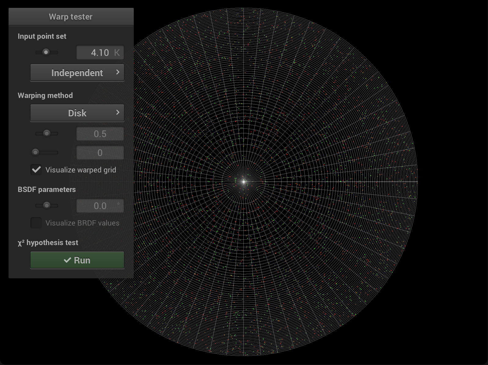
**$\chi^2$ Hypothesis Test Outcome:**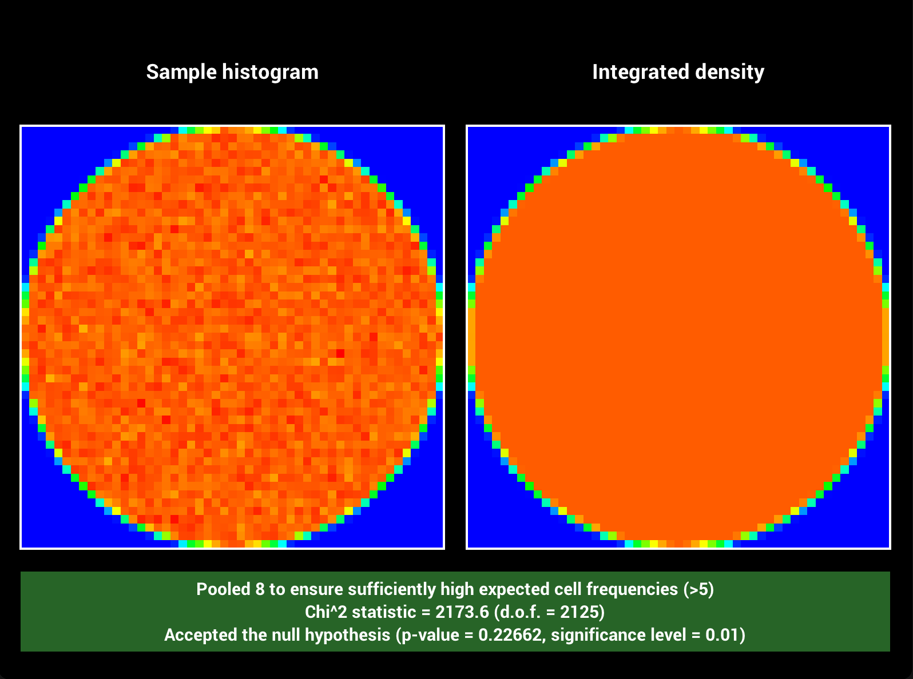
# Square to Uniform Sphere **Time spent on this task:** 5 min **Describe your implementation of `Warp::squareToUniformSphere` and the associated PDF.** Use the implementation of `Warp::squareToUniformHemisphere` and the associated PDF with $\cos{\theta_{max}} = -1$. **Warping Visualization:**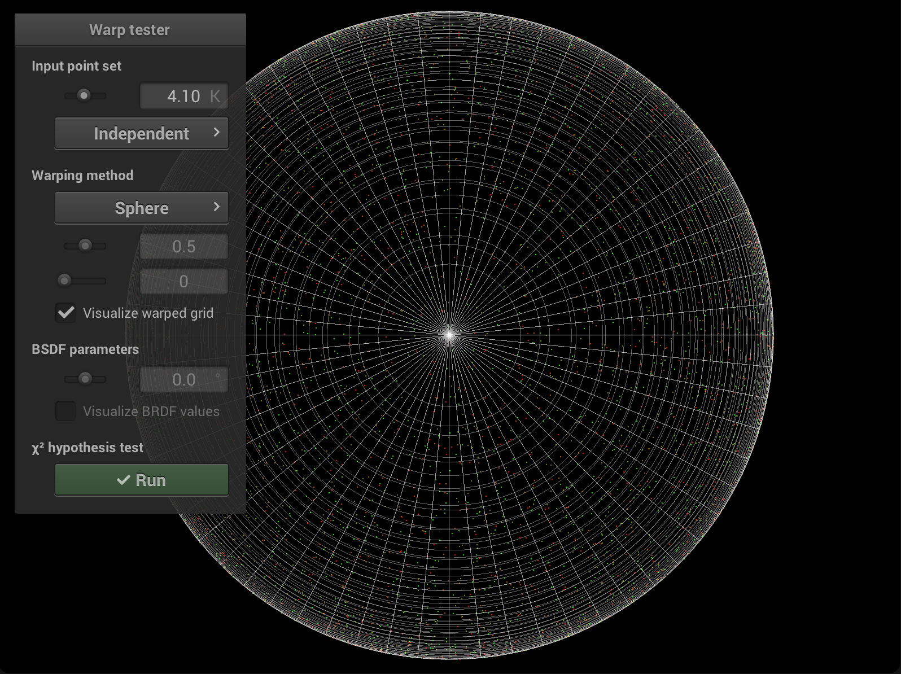
**$\chi^2$ Hypothesis Test Outcome:**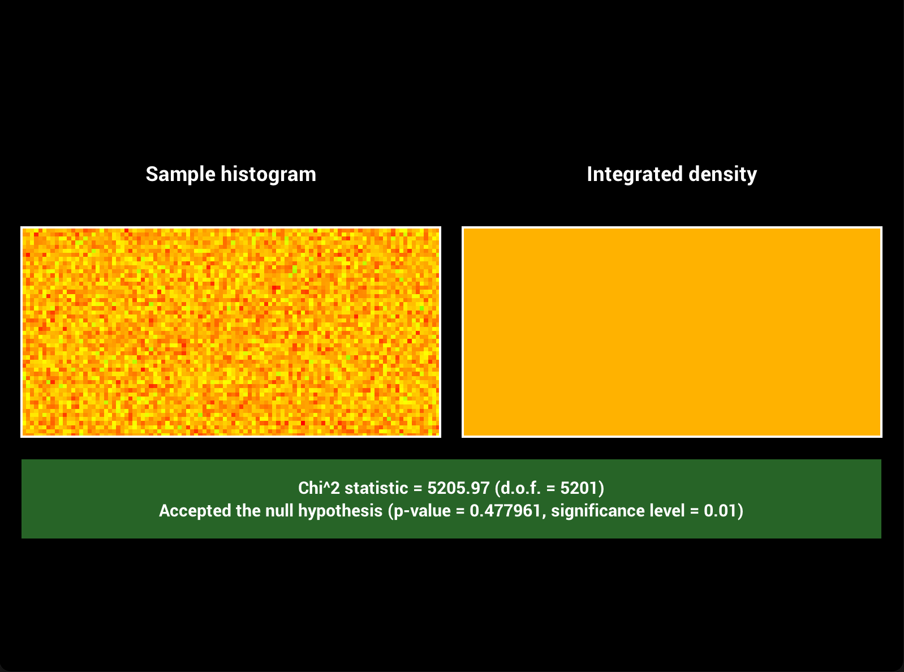
# Square to Uniform Hemisphere **Time spent on this task:** 5 min **Describe your implementation of `Warp::squareToUniformHemisphere` and the associated PDF.** Use the implementation of `Warp::squareToUniformHemisphere` and the associated PDF with $\cos{\theta_{max}} = 0$. **Warping Visualization:**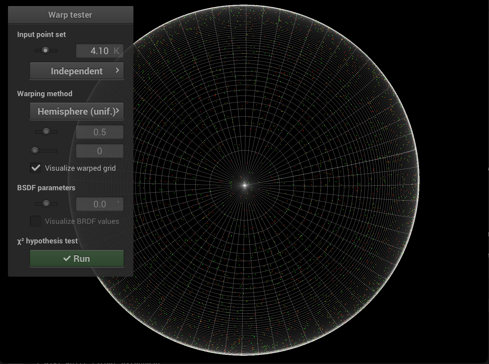
**$\chi^2$ Hypothesis Test Outcome:**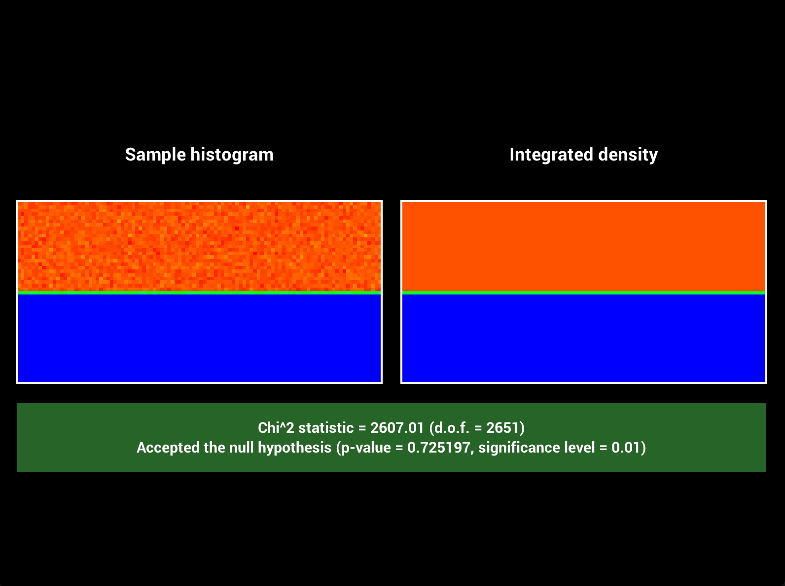
# Square to Uniform Spherical Cap **Time spent on this task:** 20 min **Describe your implementation of `Warp::squareToUniformSphericalCap` and the associated PDF.** Again, since we sample uniformly with respect to area, the pdf is simply $p(\omega) = 1 / A$ where \begin{equation} A = \int_{0}^{\theta_{max}}\int_{0}^{2\pi}\sin{\theta}\,d\phi d\theta = 2\pi(1 - \cos{\theta_{max}}) \end{equation} according to PBRB 5.5.2. Note that since we are sampling the spherical cap on a unit sphere along the direction $(0, 0, 1)$, we know that $r = 1$. So we only need $(\phi, \theta)$ from the spherical coordinates to represent a point on the spherical cap. In PBRB 13.5.3, we derived $p(\theta, \phi) = \sin{\theta}p(\omega)$. So we have $p(\theta, \phi) = \sin{\theta}/2\pi(1 - \cos{\theta_{max}})$. Integrating with respect to $\phi \in [0, 2\pi]$ gives marginal probability \begin{equation} p(\theta) = \frac{\sin{\theta}}{1 - \cos{\theta_{max}}} \end{equation} The corresponding cdf is \begin{equation} P(\theta) = \frac{1-\cos{\theta}}{1 - \cos{\theta_{max}}} \end{equation} Taking the inverse, we get that $\cos{\theta} = (1 - \xi_1) + \xi_1\cos{\theta_{max}}$, where $\xi_1$ is uniform sample from $[0, 1)$. Similarly, we can compute that $p(\phi) = 1/2\pi$. Taking the inverse, we get $\phi = 2\pi\xi_2$, where $\xi_2$ is uniform sample from $[0, 1)$. The sampled point on the spherical cap is $(x, y, z) = (\sin{\theta}\cos{\phi}, \sin{\theta}\sin{\phi}, \cos{\theta})$. **Warping Visualization:**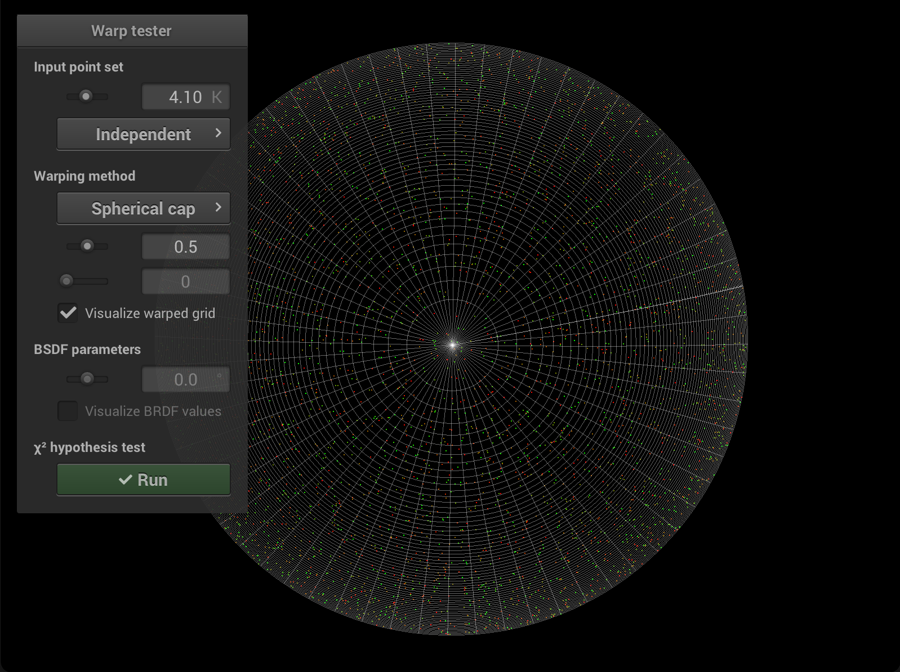
**$\chi^2$ Hypothesis Test Outcome:**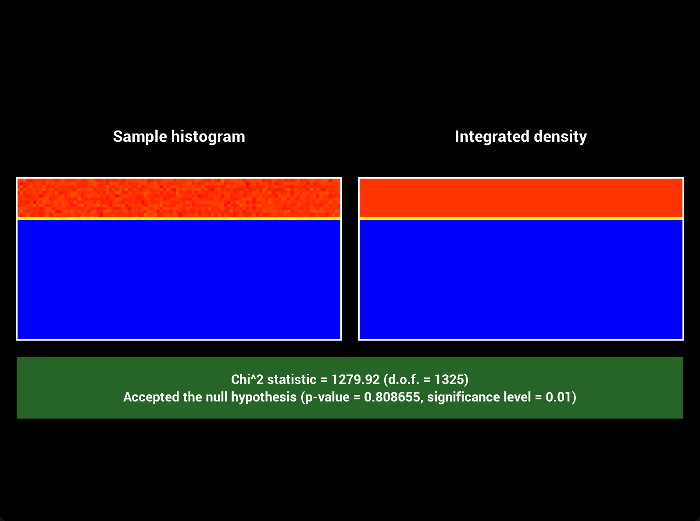
# Square to Cosine Hemisphere **Time spent on this task:** 10 min **Describe your implementation of `Warp::squareToCosineHemisphere` and the associated PDF.** By PBRB 13.6.3, we can implement `Warp::squareToCosineHemisphere` by calling `Warp::squareToUniformDisk` to uniformly sample a point on a unit disk and project it up to the unit sphere. Suppose $p(\omega) = c \cos\theta$, by PBRB 5.5.2, $d\omega = \sin{\theta}d\theta d\phi$. So \begin{equation} \int_{H^2}p(\omega)\,d\omega = \int_{0}^{2\pi}\int_{0}^{\pi/2} c \cos{\theta}\sin{\theta}\,d\theta d\phi = 1 \end{equation} we get that $c = 1/\pi$. So the associated PDF of `Warp::squareToCosineHemisphere` is then $\cos{\theta}/\pi$. **Warping Visualization:**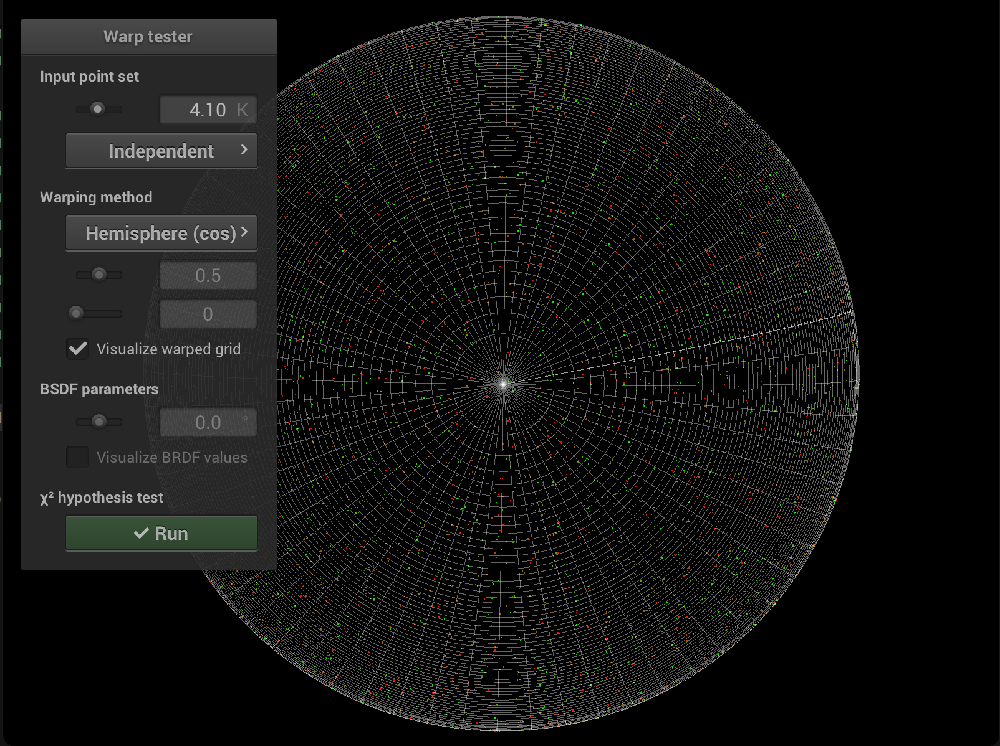
**$\chi^2$ Hypothesis Test Outcome:**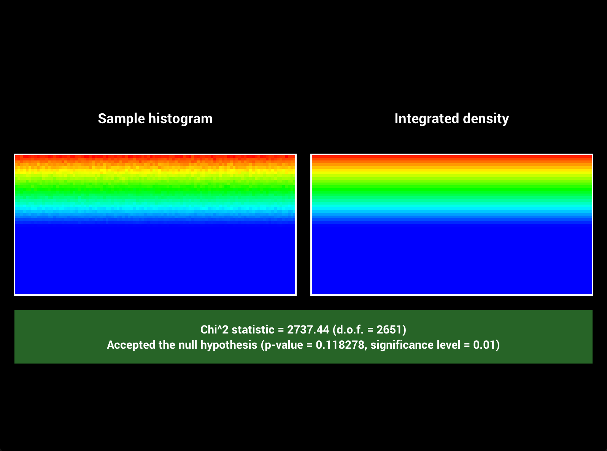
# Square to Beckmann (Please use the provided LaTeX template to answer the questions in this section. For LaTeX math symbols and formulas, referring to this [cheatsheet](http://tug.ctan.org/info/undergradmath/undergradmath.pdf) is recommended.) **Time spent on this task:** 20 min **Show your derivation of $\int_0^{2\pi}\int_0^{\frac{\pi}{2}}p(\theta, \phi)~d\theta d\phi = 1$ for Beckmann distribution**: \begin{equation} \begin{split} \bullet ~ P(\theta_0, \phi_0) & = \int_0^{\phi_0}\int_0^{\theta_0}p(\theta, \phi)~d\theta d\phi \\ & = \int_0^{\phi_0}\int_0^{\theta_0}\frac{e^{\frac{-\tan^2\theta}{\alpha^2}}}{\pi \alpha^2 \cos^4\theta} \cos\theta \sin\theta ~d\theta d\phi \\ & = \phi_0\int_{\cos\theta_0}^{1}\frac{e^{\frac{-(1-x^2)}{\alpha^2x^2}}}{\pi \alpha^2 x^3} dx \\ & = \frac{\phi_0}{2\pi}\int_{\cos\theta_0}^{1}\frac{2e^{\frac{-(1-x^2)}{\alpha^2x^2}}}{\alpha^2 x^3} dx \\ & = \frac{\phi_0}{2\pi}e^{\frac{-(1-x^2)}{\alpha^2x^2}}\Bigg|_{\cos\theta_0}^{1} \\ & = \frac{\phi_0}{2\pi}(1 - e^{-\frac{\tan^2{\theta_0}}{\alpha^2}})\\ \bullet ~ P(\frac{\pi}{2}, 2\pi) & = (1 - 0)\\ & = 1 \end{split} \end{equation} **Show your derivation of the Beckmann distribution sampling strategy by inverting the CDF, given random uniform samples $\xi_1, \xi_2$**: \begin{equation} \begin{split} & \bullet ~ p(\theta, \phi) = \frac{e^{\frac{-\tan^2\theta}{\alpha^2}}}{\pi \alpha^2 \cos^4\theta} \cos\theta \sin\theta \\ & \bullet ~ p(\theta) = \int_0^{2\pi}p(\theta, \phi)\,d\phi = \frac{2e^{\frac{-\tan^2\theta}{\alpha^2}}}{\alpha^2 \cos^3\theta} \sin\theta \\ & \bullet ~ p(\phi) = \int_0^{\pi/2}p(\theta, \phi)\,d\theta = \frac{1}{2\pi} \\ & \bullet ~ P(\theta) = \int_0^{\theta} p(\theta) \, d\theta = 1 - e^{-\frac{\tan^2{\theta}}{\alpha^2}} \\ & \bullet ~ P(\phi) = \int_0^{\phi} p(\phi)\,d\phi = \frac{\phi}{2\pi} \\ & \bullet ~ \phi = 2\pi\xi_2 \\ & \bullet ~ \theta = \tan^{-1}\sqrt{-\alpha^2\ln(1 - \xi_1)} \\ & \bullet ~ Sampled ~ Points: \\ & ~~~~ x = \sin\theta\cos\phi \\ & ~~~~ y = \sin\theta\sin\phi \\ & ~~~~ z = \cos\theta \end{split} \end{equation} **Warping Visualization:**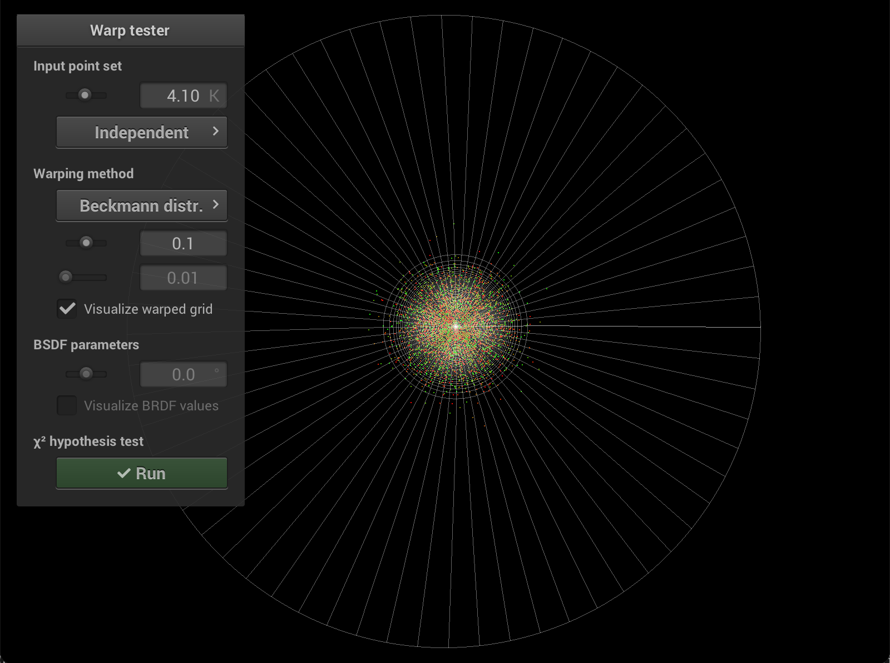
**$\chi^2$ Hypothesis Test Outcome:**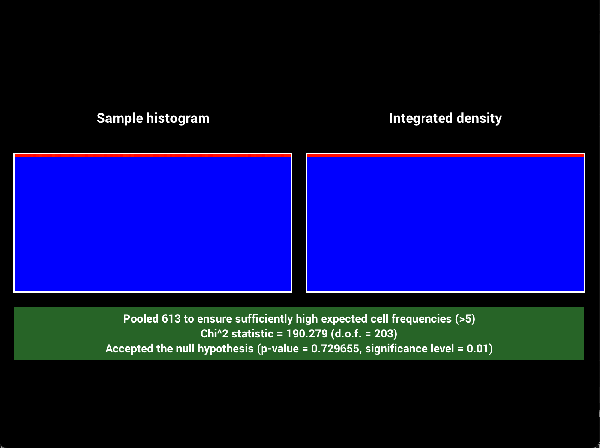
# Feedback **Use this section to provide feedback about this assignment (each task, the handout, Nori, etc.). We appreciate your opinions to help improve future homeworks and projects.** ... # Supplementary * For each task, please note down the time you spent working through it and use at least a few sentences to describe your implementation. If applicable, also report the problems you encounter (e.g. whether or how it's solved, what is the difficult part). * Please let us know to what extent your code is working (e.g. you only managed to work through part of this assignment, or your solution doesn't operate as expected in some corner cases). We encourage you to share your thinking process, and points will be granted based on your description even if the code is not 100% functioning. * Nori generates both EXR and PNG format output. Please use PNG for image comparison in the report. * This report template uses [Markdeep](https://casual-effects.com/markdeep/), which supports Markdown syntax in HTML file. For example usage, please refer to the [official demo document](https://casual-effects.com/markdeep/features.md.html). * LaTeX is also supported for typing mathematical formulas: $$ L_o(\mathbf{x}, \omega_o) = \int_{\Omega} L_i(\mathbf{x},\omega_i)\, f(\mathbf{x}, \omega_i, \omega_o)\, |\cos\theta_i|\, \mathrm{d}\omega_i $$